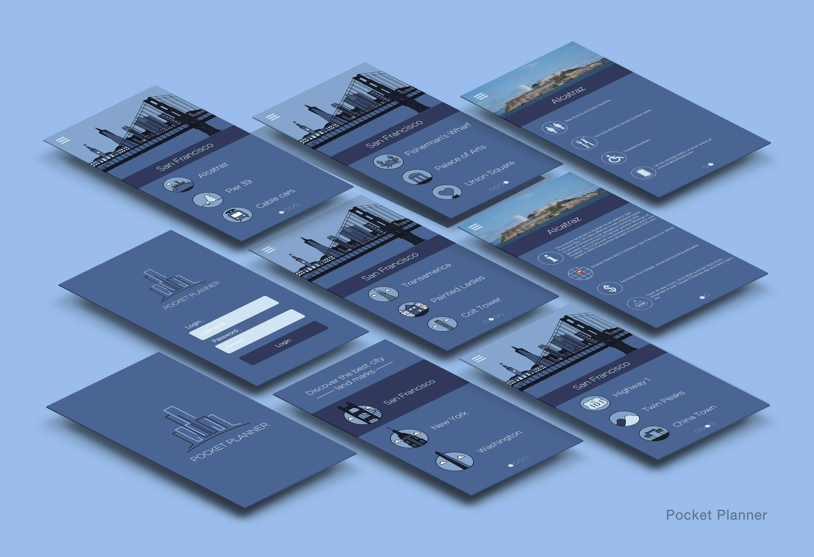

As part of our module, we were asked to create a travel app using illustration. It had to have three screens; Home, Pick a City and a detail of the city.
I gathered ideas from my own travels and from Pinterest and Dribbble. From the outset, I decided to centre my app on San Francisco and its landmarks; a city I am familiar with. I used New York and Washington as an example of two other cities. I needed to design an illustation of the city and so I started on paper, sketching a few iconic landmarks such as the Golden Gate Bridge. I also designed an icon set of the various landmarks in San Francisco adn icons which were necessary to complete the app design, such as an icon for toilets, restaurants and so on. Sketching finished, I took my design to illustarator to complete.
The outcome was a travel app called Pocket Planner consisting of nine screens. The screens are all in a monochromatic style and a flat, clean design. It provides relevant information to San Francisco's landmarks and points of interest.
